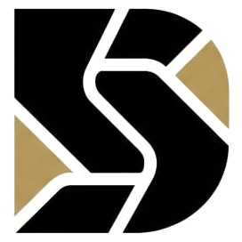

Don't just choose the most profitable crop for this year. Choose the best five-year future for your field.
Field Shift: Adapting Farms with NASA Data · NASA Space Apps 2026 · pilot: Uzbekistan · KarPS
Karshi oasis, Uzbekistan (our pilot) from space: NASA MODIS Terra, 12 Aug 2025 (Worldview).

The problem: farms plan for a climate that no longer exists.
~70 %
of the world's freshwater withdrawals go to agriculture (FAO AQUASTAT). Every wasted cubic metre counts.
Shifting
Heat and drought are moving when and where crops can grow, but most farmers still plan by habit or old calendars.
1 season
Crops are chosen one year at a time. Nobody shows the next five, so soil and water losses appear too late.
Test case: Uzbekistan, hot, dry and fully irrigated. In Karshi, very hot days rose to
104 a year (from 96, NASA POWER) and, without canal water, the soil dries 41 % from spring to summer (NASA SMAP).
But fields are still planned one year at a time.
water the farm gets: 8,000 m³/ha
Year 1 Wheat 3,590 m³
Year 2 Cotton 12,940 m³
Year 3 Wheat 3,590 m³
Year 4 Cotton 12,940 m³
Year 5 Wheat 3,590 m³
The usual wheat ↔ cotton rotation: cotton years need 62 % more water than the farm gets.
DalaShift plans five years ahead.
Pick your field.
See what changed.
Get a five-year plan.
Uzbek first · income in soʻm · one plain reason for every choice Works anywhere: NASA POWER, SMAP and HLS are global. Adding a region = its crop list + local prices.
NASA satellites, explained like a neighbour.
NASA POWER
35 years of daily weather: heat, frost, rain, crop water demand
used
NASA SMAP
How dry is the soil under the field?
used
NASA / USGS HLS
How green is each field?
used
“8 more very hot days a year than in the 1990s.”
“14 mm less rain in the growing season.”
“Each hectare needs ~370 more m³ of water a year.”
“Without canal water, your soil dries 41 % from spring to summer.” (SMAP, 2026)
Also used, non-NASA: FAO-56 crop water method · FAOSTAT yields · Korzinka and Uzum retail prices
The last five years, replayed: usual plan vs DalaShift.
Usual: wheat ↔ cotton
2021Wheat4,190 m³
2022Cotton12,840 m³
2023Wheat4,820 m³
2024Cotton11,870 m³
2025Wheat4,520 m³
Income, 5 years≈ 26.5 mln soʻm/ha
Watershort in 2 of 5 years (−8,710 m³/ha)
Soil: legume years0 of 5
Rotation health5/10
vs
DalaShift: balanced plan
2021Chickpea4,730 m³
2022Wheat3,700 m³
2023Chickpea5,190 m³
2024Wheat2,720 m³
2025Barley3,320 m³
Income, 5 years≈ 32 mln soʻm/ha
Waterfits the water every year
Soil: legume years2 of 5
Rotation health8/10
Karshi field, 8,000 m³/ha of water a year. Red = more than that. Water: backcast with real NASA POWER weather 2021–2025.
Income: estimate, prices and costs are estimates. Rotation health is a rule score (repeats, legume breaks, crop diversity), not a soil measurement.
Next: every field in Uzbekistan, then every dry farming region.